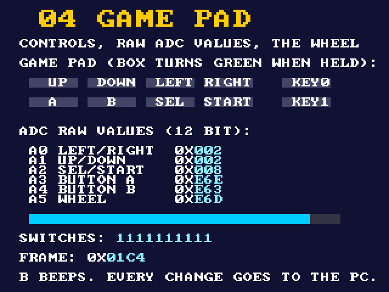

Design real hardware on an FPGA, with an AI beside you
Install the tools, learn digital design from a logic gate up to your own computer and games, then build anything you can imagine. The AI in your editor runs the tools, checks your work on the real board, and teaches as you go.
Last updated 27 October 2026 · 9 new lessons · See what's new →
Three stages
Start with stage 1. Then take the course, or go straight to building: the AI meets you where you are.
1 · Install
VS Code, Git and an AI chat by hand (about 30 minutes); then the chat installs Quartus and ModelSim, connects the board and proves it all works.
Start here →2 · Learn
Real Verilog the old-school way, following nand2tetris: gates, arithmetic, memory, then a CPU or retro games with sprites. The AI gives hints, never the answer.
The course →3 · Build anything
Ask for what you want in the chat. It builds it from verified pieces (clocks, memories, the screen, SDRAM, sensors, FFT...) and proves it on the board.
The examples →Install, and prove everything works
A short slide deck: what you need, installing VS Code, Git and Claude Code, copying the course, and then the chat takes over: Quartus, ModelSim, connecting the board and three checks. The steps are also right below.
Open lesson 0Get your computer ready, once
About 30 minutes, no prior knowledge. After that the chat does the work and tells you what to click. A Windows computer is recommended.
Install VS Code
VS Code is a program for writing code, and the chat will live inside it. Download from code.visualstudio.com, run the installer and click Next until it finishes.
Install Git
Git is a tool that copies projects from the internet to your computer, and keeps them updated. Download from git-scm.com, run it and click Next on every screen (the defaults are fine). Then close VS Code and open it again.
Add an AI chat (one of the two)
- Claude Code: in VS Code click the four-squares icon on the side (Extensions), search "Claude Code", click Install, and sign in with a Claude account.
- GitHub Copilot: needs a free GitHub account. In VS Code click the person icon at the bottom of the side bar, sign in to GitHub, open the chat and set it to Agent mode.
It works when you type hello in the chat and it answers.
Copy the project to your computer, with clicks only
- In VS Code press Ctrl+Shift+P. A search box opens at the top.
- Type Git: Clone and press Enter.
- Paste this address and press Enter:
https://github.com/avisalmon/De10LiteBKM.git - Choose a folder to keep it in (Documents is fine) and click Select as Repository Destination.
- When the message appears at the bottom, click Open, then Yes, I trust the authors.
The project's files show on the left, for example README.md and CLAUDE.md.
Or: the same with the terminal (the command line)
What is a terminal?
A terminal (also called the "command line") is a window where you give the computer instructions by typing, instead of clicking with the mouse. You type a line, press Enter, and the computer does it. Nothing to fear: it only does what you type.
How to open it in VS Code
In the top menu: Terminal, then New Terminal. (Or the keys Ctrl+`, the key under Esc.) A panel opens at the bottom of the screen, with a line like this:
That line is called the "prompt": the computer is waiting for your instruction.
How to use it
- Click inside the terminal panel so it receives your typing.
- Copy one line (the Copy button) and paste it into the terminal with Ctrl+V or a right-click.
- Press Enter, and wait until the prompt line appears again. That's the sign the instruction finished.
- Red text = an error. No big deal: copy it into the chat and it will explain.
The four lines that copy and open the project, one after the other:
mkdir C:\bkm
cd C:\bkm
git clone https://github.com/avisalmon/De10LiteBKM.git
code De10LiteBKMWhat each line does: makes a folder called bkm, goes into it, copies the project into it, and opens it in VS Code.
Open the chat and type:
That's it. From here the chat leads, step by step. Back tomorrow? Type the same sentence and it continues where you stopped.
From now on you don't type commands
The chat runs the commands itself, in VS Code's terminal. Before each one it shows what it wants to run and asks permission (Allow / Run). Read it, and click to approve. If something is unclear, ask it: "What does this command do?"
Learn digital design, from a gate to a computer
The lessons follow nand2tetris in order, so the course works next to the book. Theory starts from NAND; the practice is real Verilog on the board. Each lesson has its own page with explanations and interactive simulations, starter code that compiles but does not work yet, a ModelSim test that must pass, and proof on the board. The AI coaches with hints and checks your work; it does not write it for you. In the chat, say "teach me".
The trunk (everyone)
- Part 0 · Tools and the board lessons 0-2 ready
- Part 1 · Boolean logic (project 1) coming
- Part 2 · Arithmetic, counters, state machines, the ALU (project 2) coming
- Part 3 · Clocks, registers, RAM, the program counter (project 3) coming
Then pick a path, or both
- Path A · the CPU: machine language, the computer, the assembler (projects 4 to 6) coming
- Path B · retro games: pixels, the game pad, sprites, a game world, your own game coming
- Beyond: projects 7 to 12 (VM, Jack, compiler, OS) as pointers for self-study
Lesson 0 · Setup 1 · What an FPGA is 2 · First simulation The full lesson list
Ask for it, and the AI builds it on your board
Every capability of the board is a verified example and a skill the AI knows: a page that explains it, the full Quartus project and a bitstream you can load right away. The AI combines them into what you ask for, tests it in simulation, and proves it on the board: it reads the screen and the board's messages back over the USB cable.
All examples Projects: whole designs
From these pieces the AI builds whole designs: Pac-Man (the arcade maze, four ghosts with the arcade AI, sound, levels), RISC-V Tetris (a RISC-V CPU in Verilog, a C compiler and a simulator written for it, and Tetris in C running on it), FFT Lab (a wave generator, a scope, and our own FFT beside Altera's FFT IP on the same samples) and the Accelerometer Cube (the board's tilt as a shaded 3D cube on the screen, from the on-board accelerometer, with the live acceleration as numbers, bars and an arrow). Each project comes with an overview, an architecture spec, a user guide and the full Quartus project.
Who does what
You decide, and you do the few things only hands can do. The chat does the rest, and explains why.
| You | The chat |
|---|---|
| Install VS Code, Git and a chat, and copy the project | Installs everything else and checks it all works |
| Make a free MyAltera account and type the one-time code it emails you | Downloads Quartus Prime Lite and ModelSim, checks them, installs them |
| Plug in the board and shield; press buttons, flip switches, say what you see | Builds, programs the board, reads the screen and messages back, finds and fixes problems |
| Click "Yes" and Allow when asked | Does the work, reads the results and fixes errors |
| Decide what you want, and change things yourself | Teaches as it goes, and gives small challenges |
Good to know
Always up to date
The guide keeps improving. Every session, the chat first pulls the newest version. Your work lives in my_designs, which updates never touch.
You stay in charge
Nothing irreversible happens without your OK, and no password or key goes through the chat.
Honest status
Under construction (October 2026). Stage 1 and lesson 0 are written; twelve examples are built and checked on a real board; the course lessons after lesson 0 are being written. Each page says what is verified and what is not.